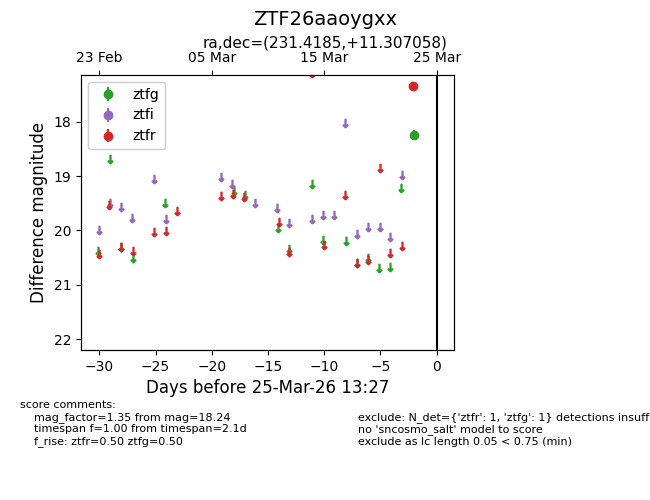
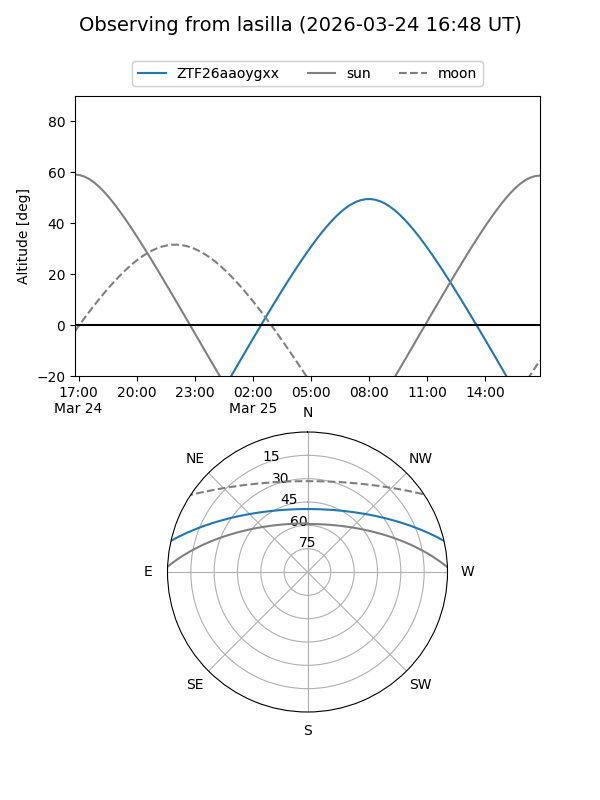
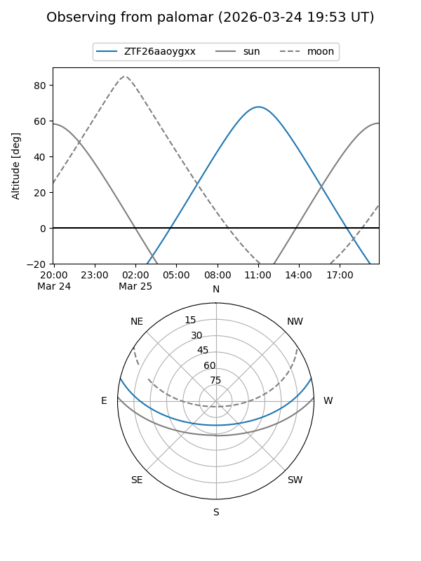

ZTF26aaoygxx
Target ZTF26aaoygxx at 2026-03-25 13:29
Aliases and brokers:
FINK: link
Lasair: link
ALeRCE: link
alt names
ZTF26aaoygxx (ztf,fink_ztf)
Coordinates:
equatorial (ra, dec) = 231.4185,+11.30706
equatorial (HMS+DMS) = 15:25:40.44,+11:18:25.41
galactic (l, b) = (16.9422,+50.51908)
Flags:
Photometry:
last ztfg=18.24, ztfr=17.34
1 ztfg, 1 ztfr detections
Lightcurve

Visibility


Additional plots